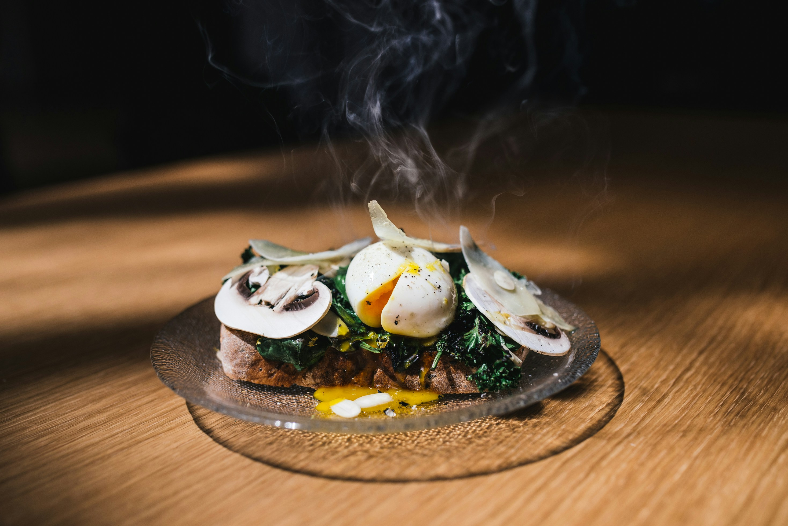

Welcome to Slowcooker Society –
Here to Make Your Experience Exceptional!
Choosing the Perfect Slow Cooker
Picking the right slow cooker can make a world of difference in your kitchen. Here are a few quick tips:
- Choose the right size based on your family size.
- Decide between a manual or programmable model.
- Look for features like adjustable temperature and safety settings.
Why slow-cooking culture
Preserve Nutrients
As a professional nutritionist, I know how important it is to retain nutrients in every meal. Slow cooking helps preserve essential vitamins and minerals.
Effortless Meal Plan

From plant-based to protein-packed, slow cookers make it easy to accommodate any dietary need.
Time-Saving
Whether you're a busy professional or managing a hectic family life, slow cooking allows you to prepare balanced, home-cooked meals without constant supervision.